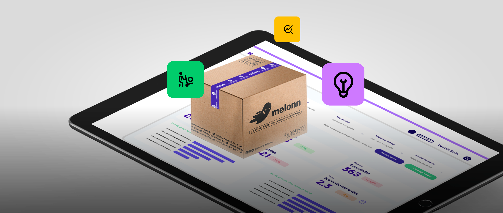

Operaciones
Ahora tendrás toda la visibilidad clara y en tiempo real de los tiempos de preparación, despacho y entrega de tus órdenes, ya sea en ventas D2C, B2B o canales externos. Con esta herramienta podrás planificar mejor tu operación, cumplir tus tiempos y mejorar la experiencia de tus clientes.
Visibilidad total de tiempos en tus órdenes de venta
Con nuestra integración directa con TikTok Shop, tu marca puede estar presente en el canal que mueve millones de ventas al día. Con pedidos automáticos, inventario sincronizado y entregas sin complicaciones, llevar tu negocio a TikTok nunca fue tan fácil.
Beneficios
Controla tus órdenes con tiempos definidos y medibles
Son los tiempos máximos en los que Melonn se compromete a cumplir cada etapa del fulfillment (empacado, despacho y entrega).
En la plataforma Órbita, cada orden muestra sus promesas asignadas en cada etapa. Recuerda que ahora podrás ver los "modificadores de esfuerzo" y son los tiempos adicionales que se suman a la promesa base cuando la orden tiene características especiales como: Cantidad de ítems o Servicios de valor agregado (VAS).
Se aplican modificadores de esfuerzo, que ajustan automáticamente el tiempo de preparación según la complejidad de la orden.
En fechas como Black Friday, Navidad o Hot Sale se aplican modificadores operacionales que ajustan los tiempos de promesa según la demanda y condiciones externas.
No, las promesas se calculan automáticamente según el método de envío, características de la orden y condiciones de la operación.
Las órdenes podrán tener aumentos en las promesas por:
Modificadores de esfuerzo: son tiempos adicionales que se suman a la promesa base cuando la orden tiene características especiales como: Cantidad de ítems o Servicios de valor agregado (VAS)
Modificadores operacionales:
son tiempos adicionales aplicados por condiciones externas o temporales que afectan la operación, estos pueden ser:
🛍️Temporadas comerciales: Black Friday, Navidad, Hot Sale, etc.
💥Promociones de alto volumen: Eventos especiales que generan picos de demanda.
📦Días adicionales por novedades en transporte: Retrasos por problemas logísticos externos.
⚠️Eventos de fuerza mayor: Clima, orden público, cierres de vías, etc.